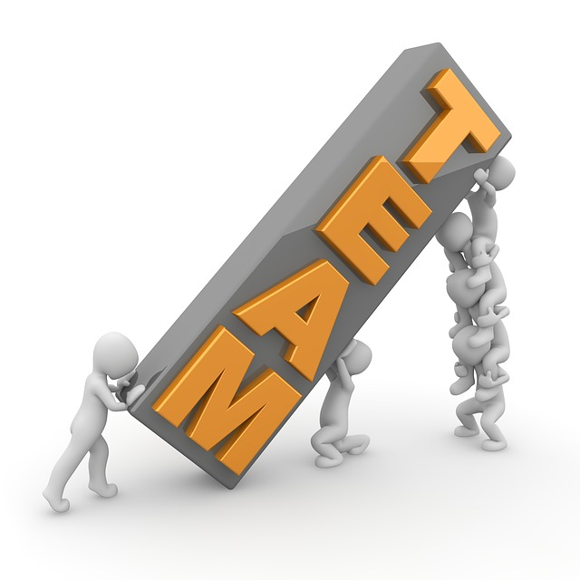
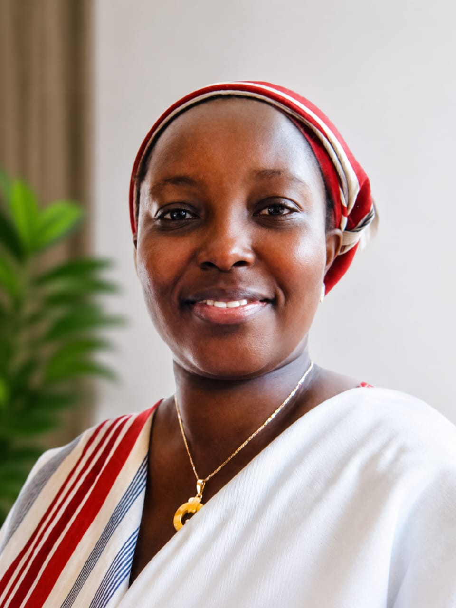
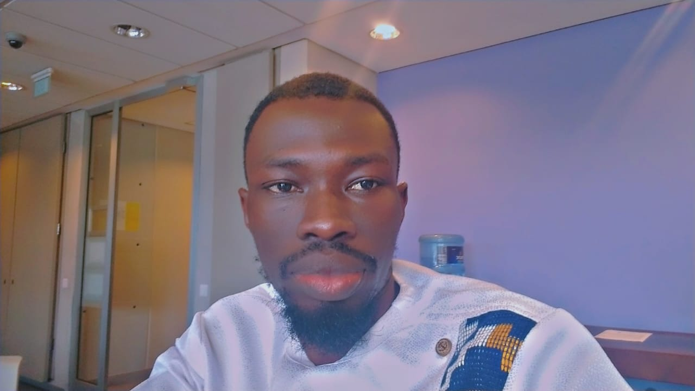
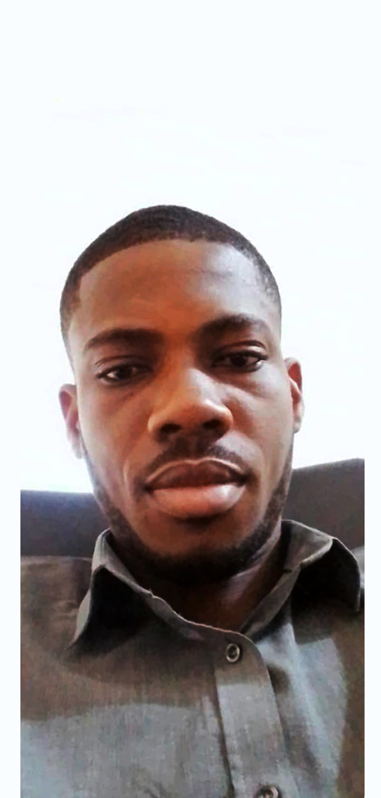

Our team brings together passionate professionals, environmental experts, community leaders, researchers, and volunteers committed to creating sustainable solutions that transform lives.

Our Foundation is led by experienced professionals who believe in integrity, collaboration, innovation, and community participation. Every member contributes unique skills and expertise to ensure that our projects create meaningful and sustainable change.
Through teamwork, accountability, and shared purpose, we continue to empower communities, protect the environment, and build a brighter future for generations to come.
Join Our TeamOur leadership team brings together expertise in environmental sustainability, community development, research, and organizational management.

Environmental, Social, Health and Safety Specialist with extensive experience in sustainability, environmental management, and community development.
Bernice Oduro Gyan is the Chief Executive Officer and Founder of TIMOSA Foundation, driven by a deep commitment to environmental sustainability and social protection.
She is an Environmental, Social, Health and Safety (ESHS) Specialist with over eight years of experience in waste management, regulatory compliance, risk control, occupational health and safety.
Bernice has contributed to major World Bank-funded infrastructure projects and has supported initiatives focused on sustainable livelihoods, women's empowerment, and community resilience.

Environmental, Social, Health and Safety professional with over twelve years of experience in risk assessment, sustainable development, and community protection.
Emmanuel Afreh Asante is an Environmental, Social, Health and Safety (ESHS) professional with over twelve years of experience in risk and impact assessment and management. Throughout my career, He has contributed to major infrastructure projects across Ghana, serving as an ESHS Specialist and ensuring compliance with national and international standards.
In this role, he has been responsible for promoting sustainable development by safeguarding the environment, enhancing the welfare, health, and safety of workers, and protecting the well-being of host communities. He has also worked to ensure that Project Affected Persons are not disadvantaged by development activities, but instead supported to maintain or improve their livelihoods.
Driven by a strong passion for sustainability and social impact, he bring both expertise and commitment to his role as a board member of TIMOSA. He is dedicated to supporting the organization’s mission to deliver meaningful environmental and social benefits that positively impact communities and future generations.

Biomedical Engineer passionate about healthcare innovation, youth empowerment, and sustainable community development.
Augustine Kayi is a Biomedical Engineer committed to improving healthcare delivery through sustainable solutions in medical equipment installation, servicing, and procurement.
Beyond technology, he is passionate about youth empowerment, mentorship, and helping young people develop skills for career growth and self-reliance.
As a Board Member of TIMOSA Foundation, Augustine supports initiatives that connect environmental sustainability, public health, and community development.
A dedicated Health, Safety and Environment professional committed to protecting people, promoting sustainability, and advancing world-class safety standards.
Godwin Kaleonaa is an accomplished Health, Safety, and Environment (HSE) professional with extensive experience in occupational health and safety management, environmental sustainability, and regulatory compliance within the construction and concrete manufacturing sectors. He possesses a strong combination of technical expertise and business leadership, enabling him to develop and implement effective HSE management systems that enhance organizational performance while ensuring the protection of people, property and the environment.
He holds a Master of Business Administration (MBA) in Oil, Gas and Energy Management and a Certificate in Human Resource Management, both awarded by Unicaf University, Zambia. He also earned an Advanced Certificate in Occupational Safety, Health and Environmental Management from the Ghana Institute of Management and Public Administration (GIMPA) and a Bachelor of Science (BSc) in Environmental Health and Sanitation Education from the University of Education, Winneba.
Mr. Kaleonaa began his professional HSE career with First Sky Limited, where he served as an HSE Officer from 2017 to 2020. Through his dedication, technical competence, and leadership, he was promoted to HSE Manager, a position he held from 2021 to 2025. During this period, he led the implementation of occupational health and safety programmes, risk management initiatives, environmental compliance strategies, incident prevention systems and safety culture improvement across major construction projects.
He is currently serving as an HSE Officer with Betonsa Ghana Limited, where he continues to champion workplace health and safety, environmental protection, employee well-being and continuous improvement in accordance with national regulations and international best practices.
With a passion for operational excellence and sustainable development, Godwin Kaleonaa remains committed to advancing health, safety, environmental and quality standards while contributing to the successful delivery of infrastructure and industrial projects through proactive leadership, strategic planning and continuous professional development.
Our organizational structure is built around specialized departments working together to deliver sustainable environmental, social, and community development solutions.
Responsible for protecting ecosystems through afforestation, reforestation, biodiversity conservation, waste management, and environmental restoration initiatives.
Focuses on climate resilience programs, renewable energy promotion, environmental education, and sustainable solutions that help communities adapt to climate change.
Works directly with communities to improve livelihoods, support vulnerable groups, and create opportunities for inclusive social development.
Generates knowledge, conducts environmental research, supports policy advocacy, and builds awareness through stakeholder engagement.
Developing creative and sustainable solutions to address environmental and social challenges.
Building trust through transparency, accountability, and ethical leadership.
Working closely with communities, partners, and stakeholders.
Creating long-term impact that benefits people and the environment.
Whether you are a volunteer, researcher, development professional, or partner, there is a place for you to help us create a sustainable future.
Volunteer With Us